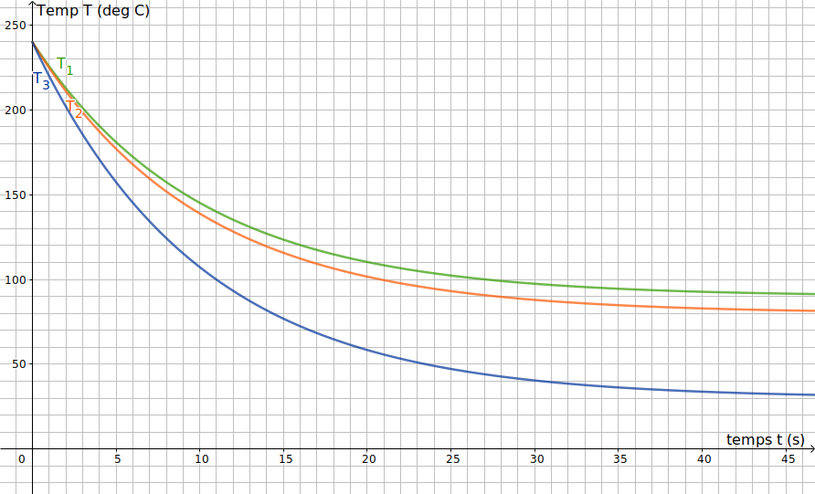

BTS - Équations Différentielles - TD1ch
Introduction
Une entreprise d'
injection plastique est chargée de réaliser par moulage des hélices de mini-drones dans un nouveau matériau plastique. La fabrication s’effectue en deux temps :
- Phase 1 : injection sous pression de la matière fondue à une température initiale de 240 °C et maintien sous pression de la matière pendant les 3 premières secondes du refroidissement.
- Phase 2 : poursuite du refroidissement et éjection de l’hélice.
À l’issue de ces deux étapes le moule est refermé et une nouvelle hélice est introduite.
Pour être utilisable, on estime que le matériau plastique ne doit pas avoir perdu plus de 20 % de sa température initiale lors des 3 premières secondes du refroidissement.
Lors de la fabrication, afin de maîtriser le refroidissement de l’hélice, on étudie la température \( T \) à laquelle le moule doit être maintenu.
En effet, pour garantir un remplissage homogène du moule, le matériau plastique ne doit pas refroidir trop vite lors de son injection dans le moule.
Partie 1
Des séries de mesures ont permis de réaliser trois courbes de refroidissement. Elles représentent l’évolution de la température du matériau plastique (exprimée en degrés Celsius) en fonction du temps (exprimé en secondes), pour trois valeurs différentes de la température du moule, \(T_1\), \(T_2\) et \(T_3\).

- Les trois températures satisfont-elles aux conditions souhaitées de fabrication d’une hélice ? Détailler la réponse.
- On estime de plus que le matériau a suffisamment durci et que l’hélice peut être éjectée sans risque de déformation lorsque sa température atteint les 100 degrés.
Parmi les températures qui satisfont aux conditions de fabrication, quelle est la température du moule qui permet de fabriquer le plus d’hélices dans un temps donné ? Expliquer.
Partie 2
On décide de maintenir le moule à une température de 80 °C. On s’intéresse à la fonction donnant la température du matériau plastique (exprimée en degrés Celsius) en fonction du temps (exprimé en secondes). On admet que cette fonction est solution de l’équation différentielle \( (E) : y' + 0{,}1 y = 8 \)
Dans cette équation, \(y\) désigne une fonction de la variable réelle t, définie et dérivable sur \( \left[0 ; +\infty\right[ \).
- Déterminer l’ensemble des solutions de l’équation différentielle \((E_0) : y' + 0{,}1 y = 0 \).
- Déterminer le réel \(a\) tel que la fonction \(g\) définie sur \( \left[0 ; +\infty\right[ \) par \(g(t) = a\) soit une solution particulière de l’équation \( (E) \).
- En déduire l’ensemble des solutions de l’équation différentielle \( (E) \).
- Déterminer la fonction \( f \) définie sur \( \left[0 ; +\infty\right[ \), solution de l’équation différentielle \( (E) \) satisfaisant aux conditions de température du problème.
Partie 3
On considère la fonction f définie sur \( \left[0 ; +\infty\right[ \) par :
\(f(t) = 80 (1 + 2 \rm{e}^{-0{,}1 t} )\).
Cette fonction \( f \) donne la température de l’hélice (en degrés Celsius) en fonction du temps \( t \) (en secondes) lorsque le moule est maintenu à une température de 80 °C.
- Justifier par le calcul le sens de variation de la fonction \( f \).
- Calculer \( \lim_{t\to+\infty} f(t) \).
- Interpréter ces deux résultats dans le contexte du problème.
- Résoudre l’équation \( f(t) = 100 \) et donner une valeur approchée par excès à \(10^{-1} \) de la ou des solutions éventuelles.
- Interpréter ce résultat dans le contexte du problème.
- On souhaite de plus que la température moyenne du matériau plastique durant la première phase de fabrication, c’est-à-dire durant les trois premières secondes, ne soit pas inférieure à 210 °C.
- Calculer la valeur moyenne de \( f \) sur l’intervalle \( \left[0 ; 3\right] \).
On rappelle que la valeur moyenne d’une fonction \(f\) sur un intervalle \( \left[a ; b\right] \) est égale à \( \displaystyle\frac{1}{b-a}\int_a^b\,f(t)\,\rm{d}t \).
- La fonction \(f\) satisfait-elle la contrainte sur la température moyenne ?